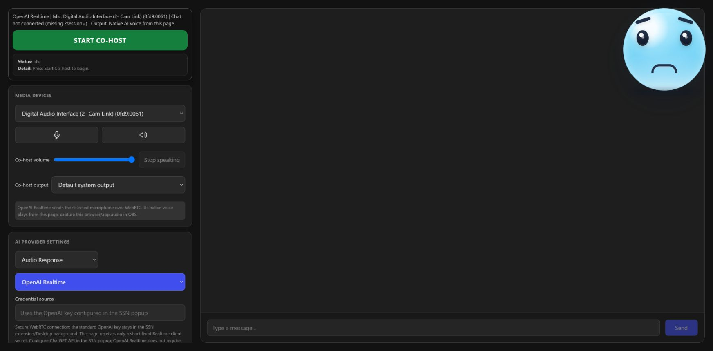

Two ways to use it
Talk to the AI out loud on cohost.html. It talks back and can discuss your chat when you ask.
Right-click a chat message in the Dock. The AI avatar reads it, or drafts an answer or light roast that you approve first.
Both show an avatar and speech bubble in OBS using the AI stage overlay, cohost-overlay.html.
Voice co-host in 8 steps
This uses OpenAI Realtime, so you'll need an OpenAI API key. Other options are below.
- In the Social Stream popup, pick ChatGPT API, paste your OpenAI project API key, and click Test selected chat bot.
- Avage
cohost.htmllink from the popup. Keep that link private. - Select OpenAI Realtime.
- Pick the microphone you talk into. Keep Audio Response selected.
- Vajutage Start Co-host.
- Leave Live Chat on Context only. Ask “What is chat saying?” any time.
- In OBS, capture the audio from the co-host page or app. The AI's voice only plays there.
- Lisa
cohost-overlay.html?session=YOUR_SESSION_IDto OBS as a Browser Source for the avatar and speech bubble.

More about OpenAI Realtime
- It's billed to your OpenAI API account. It's separate from chatgpt.com and doesn't join a ChatGPT website or app conversation.
- Your standard key stays in Social Stream. The co-host page only gets a short-lived pass.
- You don't need to turn on the Private Chat Bot option for this.
- Replies are capped at 512 output tokens. Diagnostics shows total token use and how fast replies start.
- If you talk over it, it stops and drops the unplayed audio.
- It keeps up to 20 recent chat messages for up to 90 seconds, including donations, memberships, moderator, event, and channel info. Then it forgets them.
- It reconnects by itself if the connection drops, and starts a fresh session before OpenAI's 60-minute limit. Your instructions and speed settings carry over, but it forgets what was said aloud.
How it uses your chat
Open the co-host page with the same session as Social Stream and it can see your live chat. Choose how under Live Chat.
| Live Chat setting | Mida see teeb |
|---|---|
| Context only - answer when asked (default) | Remembers recent messages and stays quiet until you ask about chat. |
| Speak replies to questions and mentions | Answers questions and mentions out loud by itself. |
| Speak a reply to every message | Answers every message out loud. |
None of these post replies into YouTube, Twitch, or Kick chat. Context only only feeds chat to the AI with OpenAI Realtime. Other providers watch the chat but don't pass it to the AI.
Voice without OpenAI
| Where you run it | How it hears you |
|---|---|
| SSN Desktop app | Whisper, on your own computer. First use downloads about 42 MB. After that it works offline. |
| Chrome (extension link) | Chrome's speech recognition. May need internet. |
| Other browsers | Voice may not work. Typing, live chat, camera or screen, and AI replies can still work. |
To check it can hear you, open Diagnostics. It should say Listening (Desktop Whisper) või Listening (OpenAI WebRTC), and your words should appear under Heard.
Free AI for testing
- Avatud Chat Bots and AI services → Configure LLM Service Provider.
- Select SSN Hosted Trial LLM (experimental).
- Leave the endpoint, token, and model blank.
It's free while the trial lasts, and may be turned off or rate-limited. For long-term use, add your own token or use a local AI.
Dock buttons in 5 steps
- Open the Dock:
dock.html?session=YOUR_SESSION_ID. - Add the stage overlay to OBS:
cohost-overlay.html?session=YOUR_SESSION_ID. Add&ttsif it should speak. - Set up an AI provider in the popup. For a quick test, use SSN Hosted Trial LLM.
- Lülitage sisse Chat Bots and AI services → Chat Bot - Private Interface → Enable private chat bot option.
- Right-click a Dock message and pick Co-host.
| Button | Mida see teeb | Needs |
|---|---|---|
| Read on Co-host | The avatar reads the message. | Stage overlay connected. No AI needed. |
| Answer | Drafts a short answer for you to approve. | Private Chat Bot on, plus an AI provider. |
| Light Roast | Drafts a short, playful, PG roast for you to approve. | Private Chat Bot on, plus an AI provider. |
| Speak | Sends your approved draft to the overlay. | A draft. |
| Copy | Copies the draft without sending it. | A draft. |
AI drafts are never spoken until you click Speak. Approval happens in the Dock, off-stream.
The right-click menu doesn't work from the keyboard yet. Keyboard users can type or talk on cohost.html instead.
Speed, quality, and cost (OpenAI)
| Seadistamine | Faster and cheaper | Smarter, slower |
|---|---|---|
| Mudel | Mini | Full quality (costs more) |
| Reasoning effort | Minimal or Low | High or Extra high (costs more) |
| Turn-taking speed | Fast: waits about 2 seconds after you stop. May cut in on a pause. | Balanced: about 4 seconds. Patient: about 8. |
Reasoning changes apply even while connected. Diagnostics shows how long replies take to start. Network and OpenAI load can still vary.
Let it control your stream
The co-host can play Spotify, switch OBS scenes, or feature a chat message. All are off by default. OpenAI Realtime supports all three. SSN Configured LLM supports Spotify only. Other providers don't support these yet.
- In the Social Stream popup, turn on only the tools you want.
- For OBS, type the exact scene names it may switch to, separated by commas. Keep
actions.htmlconnected to OBS, or use an OBS Browser Source with Full Permissions. - On
cohost.html, open Co-host Stream Controls and turn on the same tools. - Ask it out loud, like “switch to BRB”, “feature that last message”, or “clear the featured chat”.
Probleemide lahendamine
| Probleem | Proovi seda |
|---|---|
| No Co-host menu in the Dock | The stage overlay isn't open on the same session. The Primary chat bot overlay toggle doesn't affect this. |
| Answer or Light Roast is greyed out | Turn on the Private Chat Bot option, and check Social Stream is running. |
| Answer, Light Roast, or SSN Configured LLM times out | Check Social Stream is on, the session matches, Private Chat Bot is on, and your AI provider is reachable. |
| Co-host page doesn't see chat | Use the same session as the popup. Set Live Chat to anything but Off. |
| It knows chat but stays quiet | That's normal in Context only. Ask it what chat is saying, or pick another mode. |
| Nothing shows in OBS | Klõpsake Test overlay on the co-host page and check the line appears. |
| Text shows but no voice (OpenAI) | Check Audio Response, browser audio permission, and that OBS captures the co-host page audio. Don't use &tts for this. |
| Two voices at once | Eemalda &forcetts from the overlay link. |
| Heard stays empty (Desktop) | Check the mic isn't muted, and let the first download finish. |
| Heard stays empty (Chrome) | Allow the microphone, check your computer's default mic, check internet, and that Chrome speech recognition is available. |
| Replies are slow | Try Mini, Low reasoning, and Fast turn-taking. Compare the Latency line in Diagnostics. |
| OpenAI keeps disconnecting | Leave it running while it retries. Diagnostics shows what failed. |
| A stream control tool is missing | Turn it on in both the popup and Co-host Stream Controls. OBS needs at least one scene name. |
| Free trial AI stopped answering | It may be off or rate-limited. Use your own token, Ollama, or Custom API. |
| Local Gemma won't download | Point its asset host at your own copy of the Gemma files. |
| Several overlays open | Make sure the overlay label matches the Dock's target. The default is cohost-overlay. |
Mute and volume buttons
- Mute microphone stops sending your voice to the co-host.
- Mute co-host voice, the volume slider, the output picker, and Stop speaking control what you hear.
- Mute shared system audio is separate, and only shows for providers that can use your screen.
Overlay link options
Add these to the end of your cohost-overlay.html link.
| ma tahan… | Add to the link |
|---|---|
| Connect to my Social Stream (required) | ?session=YOUR_SESSION_ID |
| Have the overlay speak (Dock workflow) | &tts või &speak=1 |
| Force overlay speech even when the co-host page is talking (adds a second voice) | &forcetts |
| Set the overlay's label | &label=cohost-overlay |
| Change the name shown | &name=NinjaBot |
| Use my own avatar | &avatar=https://… |
| Move it | &position=bottom-right |
| Make it bigger or smaller | &scale=1.2 |
| Show connection status | &status |
When the co-host page is already playing the voice, the overlay skips its own speech so you don't hear it twice. &forcetts turns that off.
How the pages talk (for developers)
Message format and design notes
The Dock and overlay use the normal Social Stream session bridge. Messages are sent as overlayNinja payloads and targeted by label.
Read on Co-host: the Dock sends the chosen message straight to cohost-overlay.html.
Answer / Light Roast: the Dock asks the private chat bot in the background, shows the draft in the Dock, and only sends it to the overlay after you click Speak.
{
"action": "cohostOverlay",
"target": "cohost-overlay",
"meta": {
"command": "say",
"text": "The line the avatar should say",
"speak": true,
"emotion": "happy"
}
}
- For Dock text workflows, the overlay is the picture and optional TTS voice. For the OpenAI voice, capture
cohost.htmlaudio separately. The overlay doesn't replay that WebRTC audio. - Extra command details go inside
meta, so payloads stay predictable for overlays and automations.